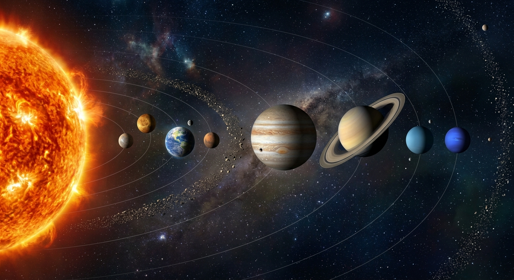

ระบบสุริยะ
ระบบสุริยะเป็นส่วนหนึ่งของ กาแล็กซีทางช้างเผือก ซึ่งประกอบด้วยดาวฤกษ์จำนวนมากกว่าแสนล้านดวง โดยมี ดวงอาทิตย์ เป็นดาวฤกษ์ดวงหนึ่งในกาแล็กซี และเป็นศูนย์กลางของระบบสุริยะ มีดาวเคราะห์รวมถึงวัตถุท้องฟ้า
ㅤ
ㅤ
ㅤ
โคจรรอบดวงอาทิตย์ด้วยแรงโน้มถ่วง โดยโลกเป็นหนึ่งในดาวเคราะห์ที่โคจรรอบดวงอาทิตย์และมีดวงจันทร์เป็นบริวาร ปรากฏการณ์ต่าง ๆ ที่เกิดขึ้นบนดวงอาทิตย์ เช่น การปะทุของพลังงานและการปลดปล่อยอนุภาคจากดวงอาทิตย์ สามารถส่งผลกระทบต่อโลกได้ ทั้งต่อสภาพอวกาศ ระบบสื่อสาร ดาวเทียม และสนามแม่เหล็กของโลก ดังนั้น ดวงอาทิตย์จึงมีความสำคัญอย่างมากต่อสิ่งมีชีวิตและสิ่งแวดล้อมบนโลก ทั้งในด้านการให้พลังงาน แสงสว่าง และความร้อนที่จำเป็นต่อการดำรงชีวิต